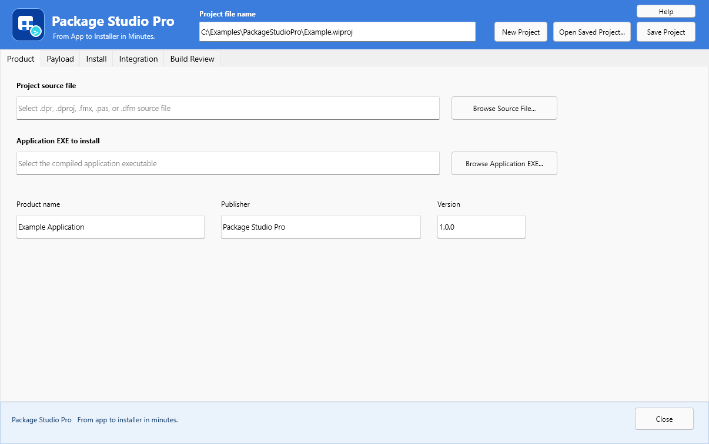

Package Studio Pro
User Help Guide
v 1.0.0
Step-by-step installer project creation, validation, build, and setup execution.
Last revised: May 22, 2026
Overview
Package Studio Pro creates Windows setup packages from a compiled application EXE, optional payload files, and a Package Studio Pro project file. The current authoring workspace is divided into focused Product, Payload, Install, Integration, and Build & Review tabs.

The Product tab collects the source file, application EXE, product name, publisher, and version. The other tabs collect payload files, install behavior, optional integrations, and build review details.
Required Information
This is the basic information required to make a Windows installer for transport.
| Field | Required | Purpose |
|---|
| Project source file | Yes | The Delphi project/source file used to infer product name and default project paths. |
| Application EXE | Yes | The compiled program that will be copied into the installer payload. |
| Product name | Yes | The display name used for folders, shortcuts, setup file naming, and reports. |
| Publisher | Recommended | The publisher shown in setup summaries and project metadata. |
| Version | Yes | The product version written into the project and setup summary. |
| Install folder | Yes | The destination folder for the installed application. |
| Build output folder | Yes | The folder where the setup EXE, payload, reports, and export ZIP are written. |
Create a Setup Package
Start Package Studio Pro from its Start menu shortcut, or open PackageStudioPro.exe in its installation folder.
- Open the Product tab and click Browse Source File. Select the Delphi source/project file for the application.
- Confirm the product name. Package Studio Pro fills this from the selected source file name, such as MazeFMX to Maze FMX.
- Confirm Publisher and Version.
- Open the Payload tab. Add support files or folders that should be installed with the application.
- Open the Install tab. Confirm the install folder, shortcut options, and optional license text.
- Open the Integration tab only when the package needs environment variables, PATH entries, file associations, or HKCU registry entries.
- Open the Build & Review tab. Confirm the Project file and Build output folder. The output folder controls where the setup package is exported.
- Click Validate. Resolve any validation messages before building.
- Click Build Package. The final setup executable is named with the product token plus Setup.exe, such as MorseTrainerSetup.exe. It is self-contained and embeds the install manifest and payload.
Below is a mockup project, for example purposes:
Product tab: Add the Authoring project file name and then fill in information about your application product.

Payload tab: Add any files and folders that will be transported.
Install tab: Add installation directives so it will be installed where you want and how you want.
Integration tab: Add environment variables, path information, file associations and any registry keys.
Build review tab: Add the "Output folder" for your setup file, then review your entered information. Click the "Validate Project" to be sure all fields are completed. If all is good, click the "Build Setup File" button to generate the
Output naming:
A product named My Application exports as MyApplicationSetup.exe. The folder also contains embedded-manifest.json, payload, build-report.txt, safety-report.txt, WipRuntime.exe, and an export ZIP.
|
|---|
Running the Exported Installer
After export, open the build output folder and run the generated setup executable, This is an example screen:

Click continue to proceed with the installation by verifying all parameters are what you want and accepting the EULA. If the EULA is not accepted, the buttons will remain grayed out and you cannot proceed and can only close the install.
Optional Data
This data is entirely optional and may be sent as needed. The license text, whether open source or not, should always be sent. At the minimum a EULA should be included.
| Option | When to use it |
|---|
| License text | Use when the setup wizard should display an EULA or product notice. |
| Digital signing | Use only when SignTool and a valid certificate are available. |
| Environment variables | Use for per-user variables needed by the application. The runtime writes user-scoped values and broadcasts the environment change. |
| PATH entries | Use for per-user PATH folders that should be appended during install and removed or restored during uninstall. Use {app} for the install folder. |
| File associations | Use when a file extension should open with the installed application. |
| Registry entries | Use only for HKCU entries that you fully understand. |
| Prerequisites and features | Use for metadata and setup notes. The current runtime lists these items in logs and does not install prerequisites automatically. |
Package Studio Pro Safety Notes
This release of Package Studio Pro blocks unsafe output folders and protected install locations, limits registry integration to HKCU, writes a safety report, and maintains an install manifest for verify, repair, and uninstall. This is a full list of safety notes.
- build-time safety validation
- blocked Windows/system install targets
- HKCU-only registry writes
- HKLM registry entries rejected
- registry values are restored or left alone on uninstall if the user changed them
- file associations restore the prior per-user default association when one existed
- manifest-driven uninstall
- rollback on failed install
- SHA-256 hashes for installed files
- modified installed files are preserved on uninstall
- pre-existing files are backed up and restored
- duplicate payload target names are blocked at validation time
- shortcut, environment variable, file association, and signing inputs are validated
- repair preserves the original uninstall manifest
- verify checks installed manifest file hashes without changing the system
- per-user uninstall registration only
- acceptance test coverage
- Current deliberate limits:
- no HKLM writes
- no service installation
- no driver installation
- no machine-wide install behavior without future elevation support
- no destructive recursive delete outside the install manifest
- Before enabling elevated/system-wide features, add:
- explicit UAC manifest
- HKLM guardrails
- service rollback
- restore point integration
- signed-elevated runtime verification